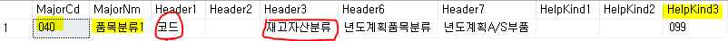
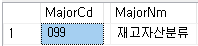
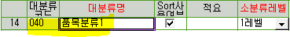
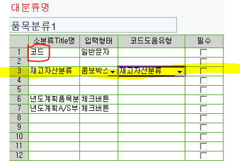
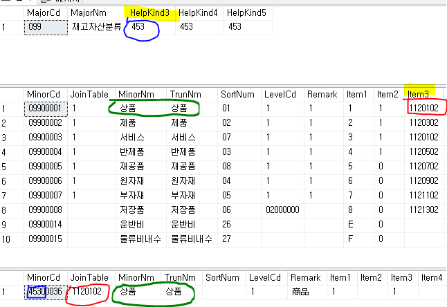

대분류 - 소분류
SELECT * FROM TDAMajor -- 대분류
SELECT * FROM TDAMinor -- 소분류
SELECT * FROM TCTCodeHelpMajor -- 코드헬프
-- 테이블안에 추가정보가 다 있다 (단점 : 최대 12개)
-- Major = Header1~12
-- Minor = Item 1~12
-- GNI에서는 소스타입이 있다 => E, C, T
-- SourceType (거의 E사용)
-- E - 사용자정의코드 MinorCd를 키 값으로 조인
-- C - 시스템정의코드 ITEM1을 키 값으로 조인 (MinorCd말고 ITEM1을 키값으로 가져옴)
-- T => 다른 테이블에서 들어오는 것
-- SourceType = C인 경우
-- 1. 대분류의 소분류 중에 코드헬프를 쓰는 소분류는 대분류를 조회 했을 때 HelpKind 부분에 값이 있다 (HelpKind 3,4,5,6,7 = 453)
SELECT MajorCd, MajorNm, HelpKind3, HelpKind4, HelpKind5 FROM TDAMajor WHERE MajorCd LIKE '099%'
-- 2. 소분류 - 코드헬프를 쓰는 Item에 코드헬프의 JoinTable값이 있다
SELECT * FROM TDAMinor WHERE MinorCd LIKE '099%' -- Item 3,4,5,6,7 => 1120102 / 4110302 / 4210102 / 1120302 / 4110102 / 4210302
-- 3. 코드헬프 소분류 조회 시 키값 = 대분류(HelpKind) / JoinTable = 소분류(Item) 넣어서 조회
SELECT * FROM TDAMinor WHERE MinorCd LIKE '453%' AND JoinTable = '1120102'
-- 대분류(HelpKind) => 사용할 코드헬프의 키값
-- 소분류(Item) => 사용할 코드헬프의 JoinTable값
-- SourceType = T인 경우
-- => 다른 테이블에서 들어오는 것
-- => 다른 등록화면 SP에서 추가입력
-- => 코드헬프 못 씀 / 대분류등록에서도 볼 수 없다
-- T 예시 (057)
-- TDAMajor : (SourceType = T, MajorNm = 단위) ==> 단위 테이블에서 값을 가져온다 (단위 테이블 = TDAUnit)
-- TDAMinor
-- JoiniTable => UnitCd ==> 실제 테이블 (단위테이블)의 키 값(UnitCd)
-- MinorNm => UnitNm ==> 실제 테이블 (단위테이블)의 이름 (UnitNm)
-- MinorNm을 선택하면 JoinTable (테이블 키값)이 들어옴
-- 단위 대분류
SELECT * FROM TDAMajor WHERE MajorCd like '057%'
-- 단위 소분류
SELECT * FROM TDAMinor WHERE MinorCd like '057%'
-- 단위 테이블
SELECT * FROM TDAUnit
-- 밑의 과정이 단위 소분류와 같다
SELECT *
FROM TDAMinor as a
JOIN TDAUnit as b
on a.JoinTable = b.UnitCd
WHERE MinorCd like '057%'
--대분류 조회 및 추가
--(마스타 및 운영관리) 마스터등록 = 공통마스터 = 대분류등록
--* 대분류 추가 (ex. Q39)
--여유칸이 없으면 DB에서 넣어줘야한다
--(대분류)코드 값을 지정해야함 / 숫자로만 된거 => 시스템에서 만들어져 있는거
--EX. 새로 만들 때 Q38 => Q39으로 만들면된다
--만들기전에 검색해야함
SELECT * FROM TDAMajor WHERE MajorCd like 'Q%'
--추가 검색 유의 사항
SELECT * FROM TCTCodeHelpMajor WHERE MajorCd LIKE 'Q%'
-- 조회화면 TDAMAJOR에서는 없던 QGC / QGT가 나옴
-- => 이 값들은 만들 때 피해줘야한다
-- 제일 마지막꺼 복사
-- MajorCd : Q38 -> Q39
-- SysType : 밑에서 설명
-- MajorNm : T-교육
-- SourceType : E (만든거니까 사용자정의코드인 E사용)
-- RegDate,AddDate : 오늘 날짜로 수정
-- 소분류 추가
-- 소분류 title => 추가정보 느낌
-- 소분류 등록에서 안보임 => SysType를 1로 바꿔줘야 보임 (TDAMajor의 두 번째 컬럼)
-- 각 자리마다 페이지를 가지고 있다
-- (모듈을 알 수 없으므로,
-- 1. 모든 자리를 1로 바꾸거나 2. 연관된 데이터 참조)
-- 소분류등록에서 값을 입력하면 ITEM1~ 차례대로 써진다
SELECT * FROM TDAMinor WHERE MinorCd LIKE 'Q39%'

MajorCd = 40
MajorNm = 품목분류1
Header => 소분류 Title명
HelpKind => 코드 헬프 (콤보박스, 코드도움 사용할 경우 값이 있다)
HelpKind3 = 99 => 코드도움유형 = ‘재고자산분류’

[마스타 및 운영관리] - [마스터등록] - [대분류등록]


099 => 대분류
453 => 코드헬프

453 + 1120102